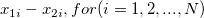
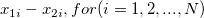

| Testmittelwert |
Die zu testende hypothetische Mittelwertdifferenz (normalerweise 0). |
| Nullhypothese |
Die zu testende Nullhypothese (normalerweise Mittelwert1 - Mittelwert2 = 0). |
| Alternativhypothese |
Optionen: Mittelwert1-Mittelwert2 <> Testmittelwert
- Ein zweiseitiger t-Test bei verbundenen Stichproben wird durchgeführt: Ist die Mittelwertdifferenz zwischen den zwei Datensätzen kleiner oder größer als die hypothetische Mittelwertdifferenz?
Mittelwert1-Mittelwert2 > Testmittelwert
- Ein oberer t-Test bei verbundenen Stichproben wird durchgeführt: Ist die Mittelwertdifferenz größer als die hypothetische Mittelwertdifferenz?
Mittelwert1-Mittelwert2 < Testmittelwert
- Ein unterer t-Test bei verbundenen Stichproben wird durchgeführt: Ist die Mittelwertdifferenz kleiner als die hypothetische Mittelwertdifferenz?
|
| Signifikanzniveau |
Das Signifikanzniveau des Tests |
| Konfidenzintervall(e) |
Ein Konfidenzintervall für den Mittelwert wird berechnet. Berechnungseinzelheiten finden Sie unter Algorithmen: t-Test bei verbundenen Stichproben.
|
| Konfidenzniveau(s) in % |
Legen Sie die Konfidenzniveaus (durch Komma getrennt) fest, (1- )%. Diese Option ist verfügbar, wenn Konfidenzintervall(e) aktiviert wird. )%. Diese Option ist verfügbar, wenn Konfidenzintervall(e) aktiviert wird. |
 ist .
ist .